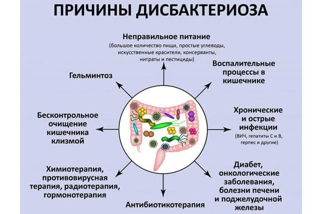

Рассмотрим для начала несколько специальных терминов, без которых в поднятой теме не разобраться. Отметим, что во всех местах человеческого организма, где микробы живут (нос, легкие, горло, кишечник, влагалище), присутствует не одна какая-нибудь бактерия, а определенная, часто очень индивидуальная комбинация микроорганизмов. Так, в кишечнике всегда есть и кишечные палочки, и кисломолочные бактерии, и бифидумбактерии, и еще пара десятков других менее известных (но не менее нужных) микроорганизмов.
Конкретная комбинация бактерий называется микрофлорой. Понятно, что бывает микрофлора носоглотки, микрофлора кишечника, микрофлора влагалища и т. п.
Нормальный (оптимальный для поддержания здоровья данного организма) количественный и качественный состав микрофлоры называется эубиозом.
Изменение нормального для данного организма состава и количественных значений микрофлоры называется дисбактериозом. Говоря другими словами, дисбактериоз – это нарушение состава и свойств микрофлоры.
Из приведенного определения вполне понятно, что возникнуть дисбактериоз может где угодно – опять-таки и в носоглотке, и в кишечнике, и во влагалище. Тем не менее в практике отечественной педиатрии, тема дисбактериоза кишечника поднимается и обсуждается настолько часто, что все остальные дисбактериозы как-то отходят на второй план. И если вы услышите слово «дисбактериоз», то с максимально возможной вероятностью и врачи, и пациенты, и родители пациентов имеют в виду именно дисбактериоз кишечника.
Населяющая кишечник микрофлора выполняет множество самых разнообразных функций. Некоторые из этих функций мы назовем – хотя бы для того, чтобы лишний раз подчеркнуть важность мирного сосуществования человека и бактерий, его населяющих.
Итак, микрофлора кишечника:
• участвует в синтезе витаминов – фолиевой и никотиновой кислот, витамина К, витаминов группы В;
• помогает синтезировать аминокислоты и способствует обмену различных других кислот – желчных, жирных, мочевой кислоты;
• обеспечивает нормальный газообмен в кишечнике;
• способствует нормальному делению (обновлению) клеток слизистой оболочки кишечника;
• стимулирует работу лимфоидных клеток кишечника;
• повышает активность кишечных ферментов…

Этот список можно еще долго продолжать, но лучше проиллюстрируем кое-что из перечисленного. Так, например, за умной медицинской фразой «стимулирует работу лимфоидных клеток кишечника» скрываются вполне конкретные проблемы – при дисбактериозе работа лимфоидных клеток нарушается, а именно лимфоидные клетки синтезируют очень важные для защиты от инфекций вещества – в частности иммуноглобулины и лизоцим. А ненормальное обновление клеток слизистой оболочки кишечника приводит к тому, что многие вещества, «обязанные» оставаться в кишечнике (различные яды, аллергены), начинают попадать (всасываться) в кровь.
Состав и свойства микрофлоры подвержены влиянию множества факторов и определяются возрастом, временем года, характером питания, состоянием здоровья вообще и способами лечения отдельных болезней в частности.
Все заболевания желудочно-кишечного тракта сопровождаются дисбактериозом кишечника той или иной степени выраженности, но при особом желании практически любую болезнь можно рассматривать в качестве источника дисбактериоза: коль скоро болезнь влияет на образ жизни (например на питание) и требует приема лекарств, так все это неминуемо скажется на благополучии обитателей кишечника.
Главное, что должны понять родители:
• состав и свойства микрофлоры могут меняться под воздействием множества факторов;
• огромное число болезней может сопровождаться дисбактериозом;
• дисбактериоз – всегда следствие;
• устранение дисбактериоза не влияет на причину его возникновения;
• устранение причины приводит к быстрому устранению дисбактериоза.
Теперь самое главное:
• ДИСБАКТЕРИОЗ – НЕ БОЛЕЗНЬ;
• у дисбактериоза нет симптомов;
• нет жалоб, типичных для дисбактериоза;
• нет лекарств, способных лечить дисбактериоз.
Дисбактериоз – это микробиологический термин, характеризующий состояние микрофлоры. В то же время для того, чтобы имеющуюся в кишечнике микрофлору охарактеризовать, ее надобно с чем-то сравнивать. Отсюда теоретическое понятие «нормальная микрофлора»: многочисленными исследованиями было установлено, что в кишечнике человека одних микробов столько, а других столько. И это принято за норму. Еще раз повторимся – теоретическую норму, ибо никакой практической ценности исследование на дисбактериоз не имеет.
Почему? Прежде всего потому, что для анализа на дисбактериоз используют кал, т. е. определяют качественный и количественный состав микробов, обитающих в испражнениях.
И теоретическая, и практическая бессмысленность такого исследования определятся тем очевидным фактом, что микробы в кишечнике и микробы в какашках – это принципиально разные понятия, и даже самое пристальное изучение каловых масс не позволяет делать объективные выводы о микрофлоре, обитающей в кишечнике и осуществляющей очень важные и очень нужные функции, о которых мы уже написали.
Большинство ученых во всем мире считают проведение бактериологического исследования кала «на дисбактериоз» нерациональным.
Это связано с очень низкой информативностью исследования, что обусловлено:
• невозможностью определения «нормы вообще», поскольку эубиоз специфичен для каждого индивидуума и зависит от возраста, места жительства, гигиенических навыков, характера питания, времени года и др.;
• нестабильностью результатов – исследование разных порций кала в разное время суток и в разных лабораториях дает разные результаты;
• отсутствием в полученных результатах клинически значимой информации. Во-первых, потому что процесс пищеварения осуществляется пристеночно, а в анализе «на дисбактериоз» оценивается микробная флора каловых масс, т. е. микробная флора в просвете кишечника. Во-вторых, потому что процесс пищеварения осуществляется главным образом в тонком кишечнике и не может быть охарактеризован содержанием бактерий в нижних отделах толстого кишечника.
NB!
Очень хотелось бы обратить внимание читателей на тот факт, что формулировки «лечение дисбактериоза» и «диагноз дисбактериоза» по сути своей не точны. Более того – принципиально ошибочны. Ибо, еще раз фиксирую внимание: нет, не существует такой болезни – дисбактериоз. Нарушение состава и свойств микрофлоры – микробиологическое понятие, которое легко подтвердить результатами анализов. Дисбактериоз – всего лишь одно из проявлений множества болезней, а коррекция свойств микрофлоры – одно из направлений псевдолечения. Именно псевдолечения, ибо применяемые методы исследования (анализ кала на дисбактериоз) не дают объективной информации о состоянии микрофлоры. А как же можно корригировать что-либо при отсутствии возможности получения объективной информации?
Приходится, тем не менее, признать, что сплошь и рядом дисбактериоз является мифическим диагнозом, на который очень легко списать огромное число самых разнообразных болезней, жалоб и симптомов.
Аллергический дерматит, срыгивания, любые (!) нарушения частоты стула, запаха, цвета и консистенции кала, боли в животе, проблемы с прибавкой веса, нарушения аппетита, запах изо рта, частые ОРЗ, реакции на прививки, непереносимость отдельных продуктов питания, болезни зубов и еще десятки, если не сотни проблем не находят решения именно потому, что главным «виновником» объявляется дисбактериоз, а лечение оного – единственно возможным вариантом спасения.
В результате основные причины развития конкретной болезни не устраняются, а вся помощь больному превращается в бег по кругу между аптекой и бактериологической лабораторией. Ибо анализ на дисбактериоз, в котором было бы написано «норма», – удивительная редкость: бактерий много, и хоть какая-то да выйдет за строгие рамки, отведенные ей отечественной медицинской наукой.
Следует подчеркнуть, что популярность диагноза «дисбактериоз» именно в нашей стране – во многом дань ментальности, стремлению в обязательном порядке лечить и лечиться.
При аллергическом дерматите следует, например, не допускать перегрева (ибо потливость усиливает симптомы болезни), прекратить эксперименты с едой и контакты с бытовой химией. Но это не лечение. Ибо исключить шоколад, поставить фильтр на воду, проветрить комнату и расстаться с покрашенным неизвестно каким красителем зеленым плюшевым слоном – это, повторяю, не лечение. А вот сдать анализ на дисбактериоз, обнаружить в нем избыток какой-нибудь клебсиеллы или недостаток лактобацилл, объявить указанных микробов виновниками аллергии и активно поедать лекарства – это по-нашему, это якобы лечение…
Е.О.Комаровский. "Здоровье ребенка"